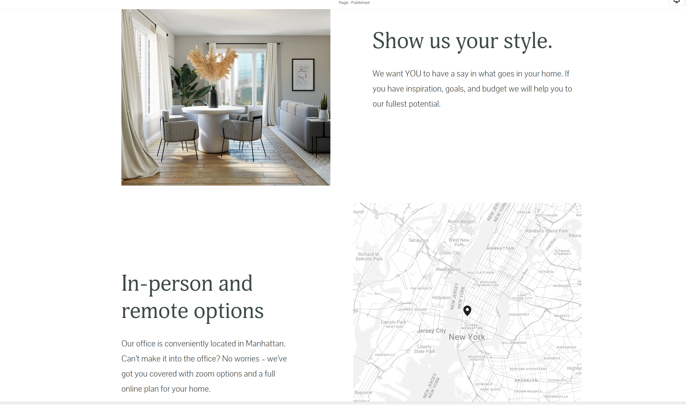
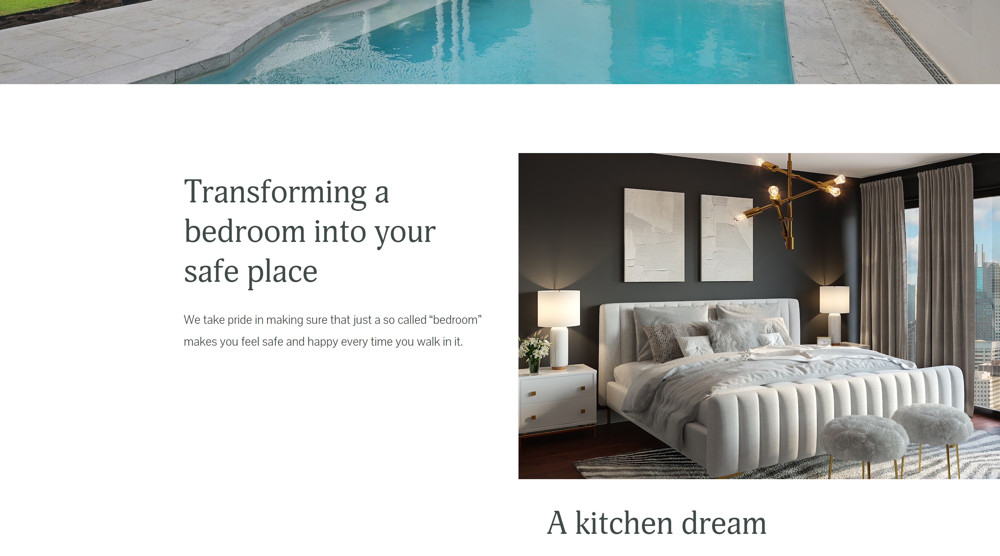
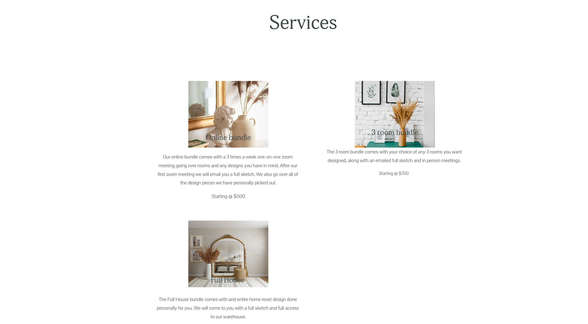
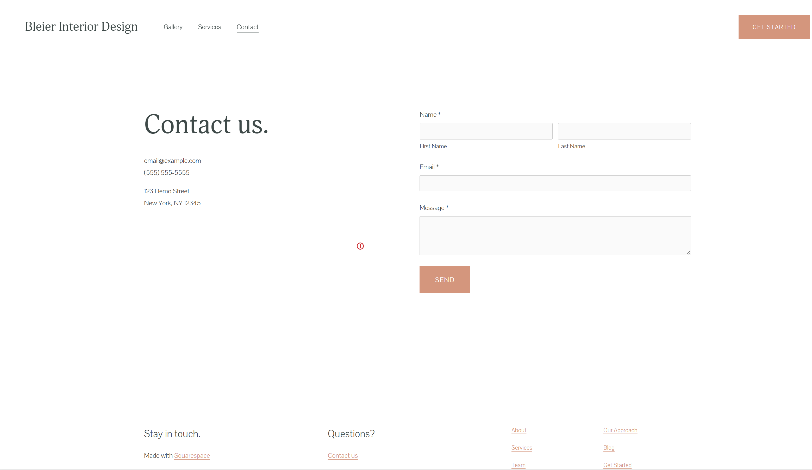

<!DOCTYPE htm1>
<htm1 lang="en">
    <head>
        <nav>
            <a href="index.html">Home</a>
            <a href="tags.html">HTML&CSS</a>
            <a href="Media.html">Wordpress</a>
            <a href="nested.html">Squarespace</a>
        </nav>
        <header>
            <h1>Squarespace</h1>
            <section>
                <p>I really enjoyed using Squarespace. There was a lot of fredom when it came to creating a website. There were many tempplates to choose from to be able to make your website feel super professional!</p>
            </section>
      <section>
        <p>Tips and Tricks!</p>
      </section>
    </section>
    <ul>
        <li>Use the templates! There are so many to choose from.</li>
        <li>Make it colorfull, make it your own and look professional</li>
    </ul>
    <section>
        <p>Below are pictures from my Squarespace project</p>
    </section>
    
    
    
    
    
    
    


            <style>
          
                body{
                    background: gray;
                }
            p {
                color: white;
                font-size: 22px;
    
             P{
                color:white;
            }
            .color {
                color: green;
            }
            #heading {
                color: black;
            }
            
    
    
            </style>
